《大型语言模型的意义和理解需要感官基础吗?是的!》
来自Yann LeCun的Do large language models need sensory grounding for meaning and understanding? Spoiler: YES!
机器学习糟透了!
- (与人类和动物相比)监督学习(SL)需要大量的标记样本。
- 强化学习(RL)需要大量的试验。
- 自监督学习(SSL)需要大量的未标记样本。
- 目前大多数基于ml的人工智能系统:犯愚蠢的错误，不推理也不计划
- 动物和人类:
- 可以很快学习新任务。
- 知道世界如何运行
- 能够推理和计划
- 人类和动物有常识，而机器却没有那么多常识(这很肤浅)。
自我监督学习=学会填空
自回归大型语言模型(AR-LLMs)
-
Auto-Regressive Large Language Models (AR-LLMs)
-
token可以表示单词或子单词
-
编码器/预测器是一个transformer架构
-
表现惊人，但是会犯愚蠢的错误
- 事实错误、逻辑错误、前后矛盾、推理有限、毒性……
-
LLM不了解潜在的现实，他们没有常识&他们不能计划他们的答案
关于AR-LLMs的不受欢迎的观点
- Auto-Regressive LLMs are doomed.
- 它们不可能是真实的、无毒的等等。
- 设任何生成的令牌将我们带出正确答案集合之外的概率为$e$，则$P(correct)=(1-e)^n$。
- 这是指数增长的，这是不可修复的。
自回归生成模型太烂了!
- AR-LLMs
- 在输入和输出之间有一个常数的计算步骤。微弱的代表性力量（Weak representational power.）。
- 没有真正的推理和计划。
- 人和大多数动物
- 理解世界如何运行
- 能预测动作序列
- 可以执行无限步骤的推理链。
- 能通过将复杂任务分解为子任务序列来计划它。
人工智能和机器学习面临的三大挑战
1.学习世界的表征和预测模型
- 监督学习和强化学习需要太多的样本/试验
- 自我监督学习/学习依赖/填补空白
- 学习以非特定于任务的方式来表示世界
- 学习用于计划和控制的预测模型
2.学会推理，像Daniel Kahneman的“System 2”
- Beyond feed-forward, System 1 subconscious computation.
- 使推理与学习相容。
- Reasoning and planning as energy minimization.
3.学习计划复杂的动作序列
- Learning hierarchical representations of action plans
能够推理和计划的认知架构
立场论文：“A path towards autonomous machine intelligence”
Longer talk见 YouTube上的“LeCun Berkeley” 。
自主人工智能的模块化架构
- Configurator
- 为任务配置其他模块
- Perception
- Estimates state of the world
- World Model
- Predicts future world states
- Cost
- Compute “discomfort”
- Actor
- Find optimal action sequences
- Short-Term Memory
- Stores state-cost episodes
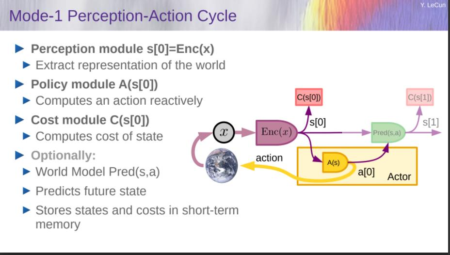
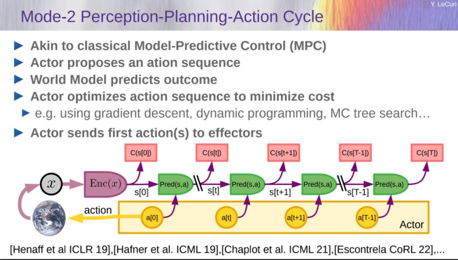
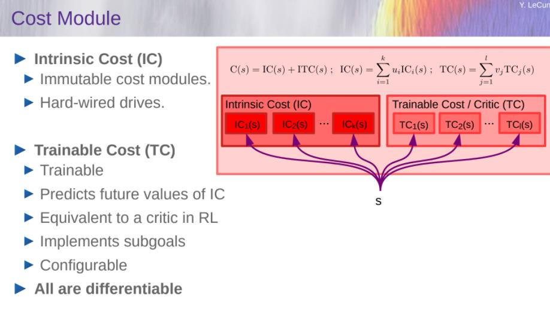
建立和训练World Model
——基于能源模型的联合嵌入体系结构
我们如何表示预测中的不确定性?
- 世界只有部分是可预测的
- 一个预测模型如何能表示多个预测?
- 概率模型在连续域是难以处理的。
- 生成模型必须预测世界的每一个细节
- 我的解决方案：Joint-Embedding Predictive Architecture
世界模型的体系结构:JEPA
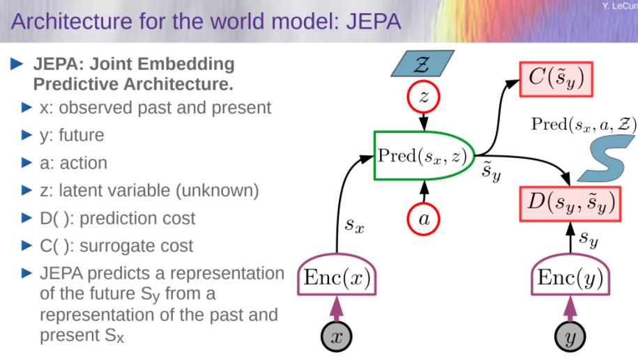
架构:Generative vs Joint Embedding
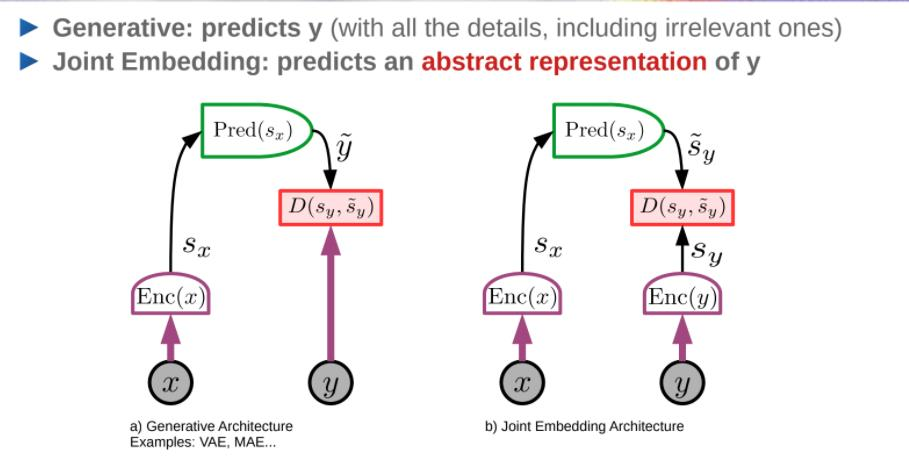
Energy-Based Models:
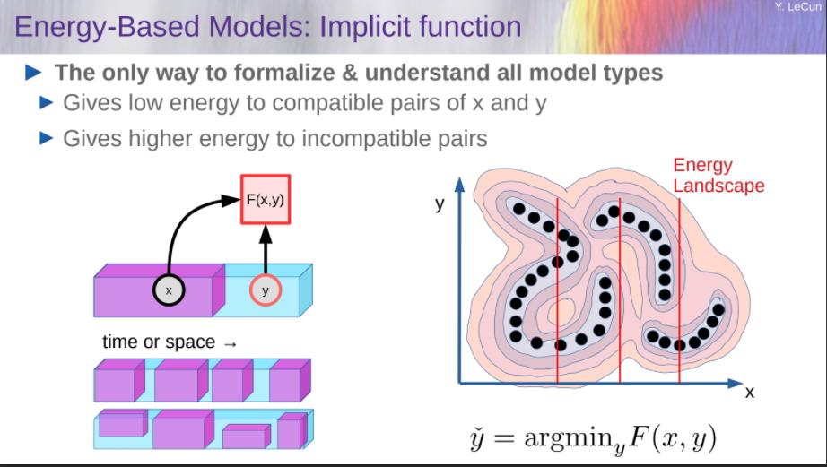
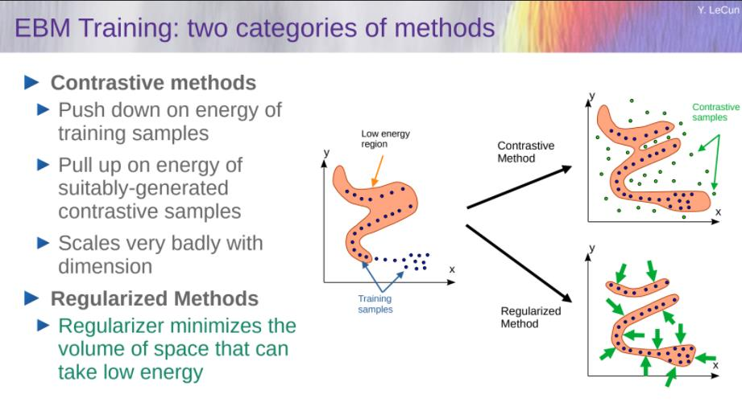
推荐
- 放弃生成模型
- 偏向joint-embedding architectures
- 抛弃Auto-Regressive generation
- 抛弃概率模型
- 偏向energy-based models
- 抛弃对比方法
- 偏向regularized methods
- 抛弃强化学习
- 偏向model-predictive control
- 只有当计划不能产生预期结果时，才使用RL来调整世界模型或critic。
非对比学习地训练JEPA
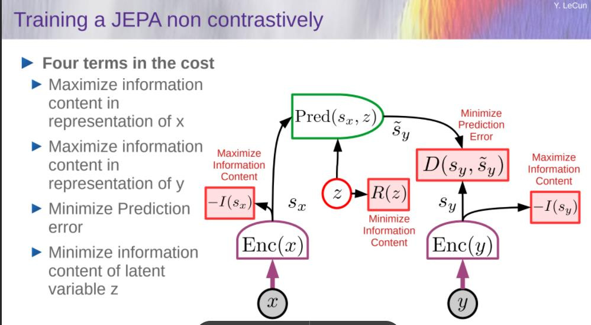
VICReg: Variance, Invariance, Covariance Regularization
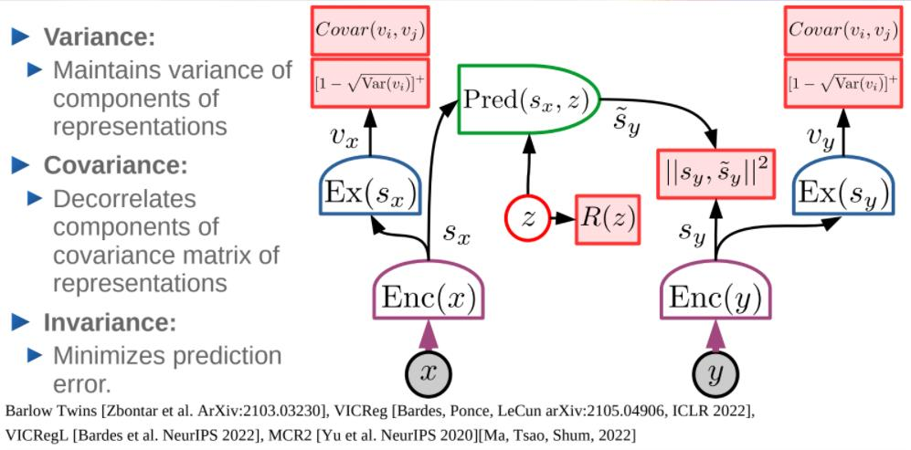
VICRegL
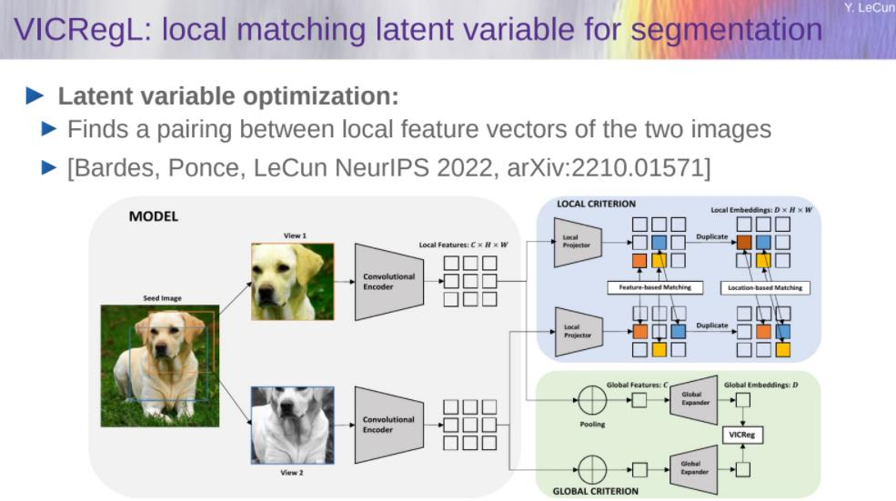
MC-JEPA: Motion & Content JEPA


Image-JEPA
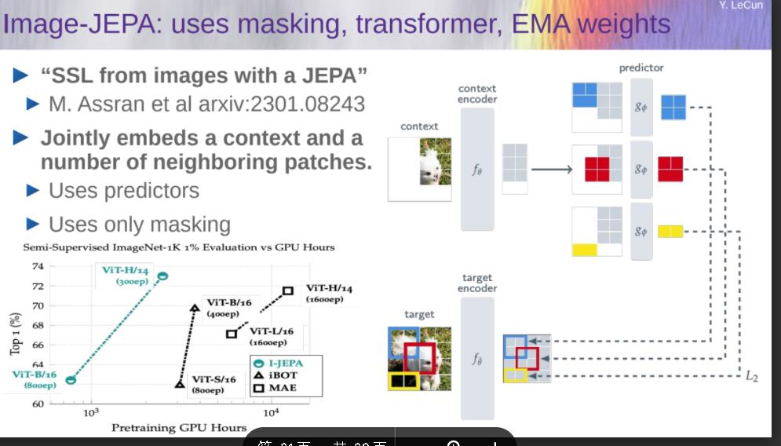
Hierarchical Prediction at Multiple Time-Scales & Abstraction Levels
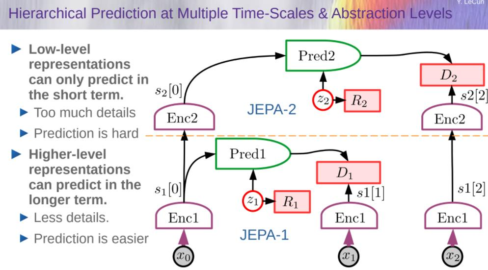
Hierarchical Planning with Uncertainty
- Hierarchical world model
- Hierarchical world model
- An action at level k specifies an objective for level k-1
- Prediction in higher levels are more abstract and longer-range.
- 这种通过最小化“行动”变量的成本来进行规划/推理的类型是当前架构所缺少的
- 包括AR-LLMs，多模态系统，学习机器人，…
迈向自主人工智能系统的步骤
- 自监督学习
- 学习世界的表象
- 学习世界的预测模型
- 处理预测中的不确定性
- Joint-embedding predictive architectures
- Energy-Based Model framework
- 从观察中学习世界模型
- 像动物或者人类婴儿一样？
- 推理和计划
- 这与基于梯度的学习是兼容的
- 没有符号，没有逻辑→向量和连续函数
立场/猜想
-
预测是智力的本质
- 学习世界的预测模型是常识的基础
几乎所有的东西都是通过自我监督学习学到的
- 低级特征、空间、对象、物理、抽象表现……
- 通过强化、监督或模仿几乎学不到任何东西
-
推理==模拟/预测+目标优化
- 计算上比auto-regressive generation更强大。
-
H-JEPA和非对比训练才是关键
- 概率生成模型和对比方法注定要失败。
-
情感是自主智力的必要条件
- 评论家或世界模型+内在成本对结果的预期。
AI研究的挑战
- 为从视频、图像、音频、文本中训练基于层次联合嵌入体系结构的世界模型寻找一个通用的方法。
- 设计替代成本以驱动H-JEPA学习相关表示(预测只是其中之一)
- 将H-JEPA集成到一个能够规划/推理的代理中
- 在不确定性存在的情况下设计层次规划的推理程序(基于梯度的方法，束搜索，MCTS，…)
- 在模型或评论家不准确并导致不可预见的结果的情况下，尽量减少RL的使用。
- Scaling
《大型语言模型的意义和理解需要感官基础吗?是的!》
https://lijianxiong.work/2023/20230327/